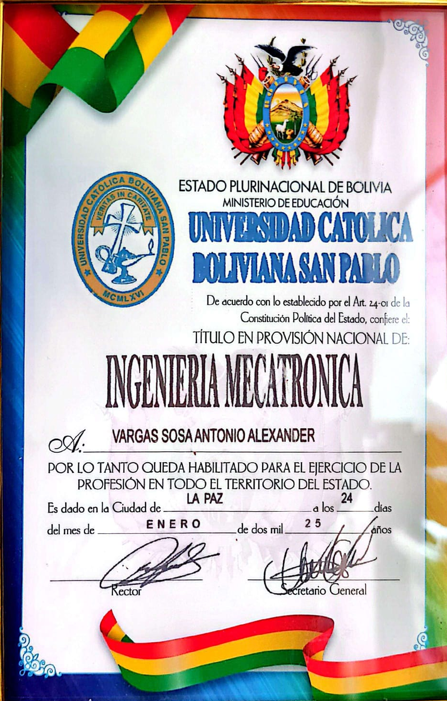
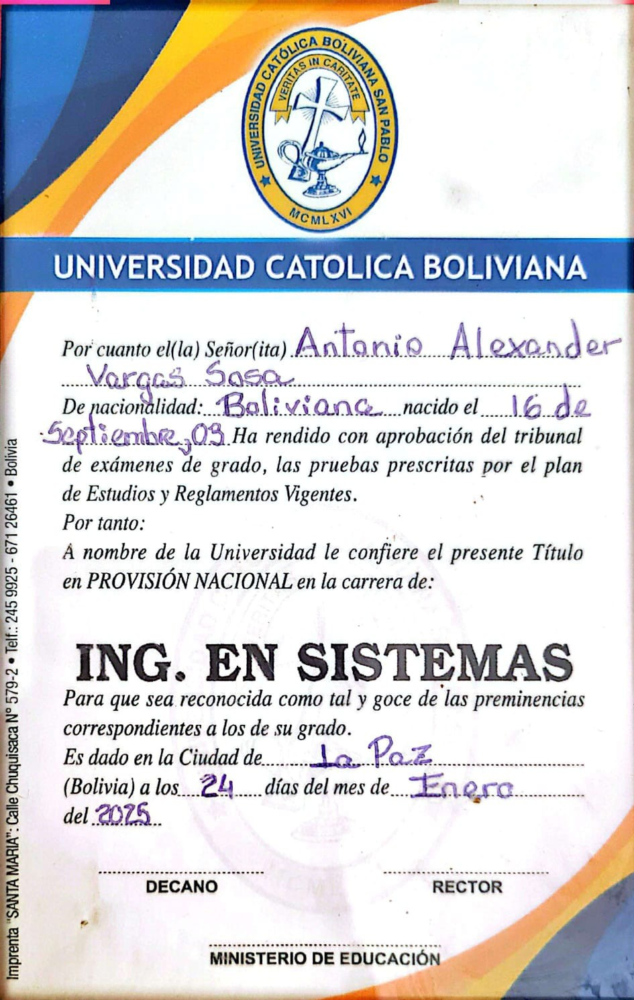
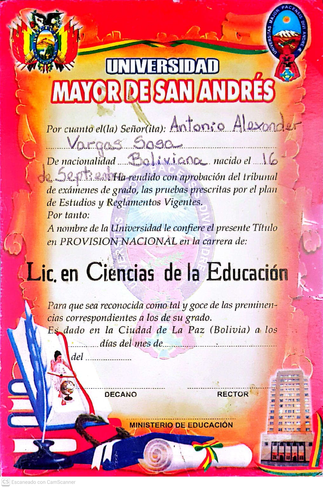
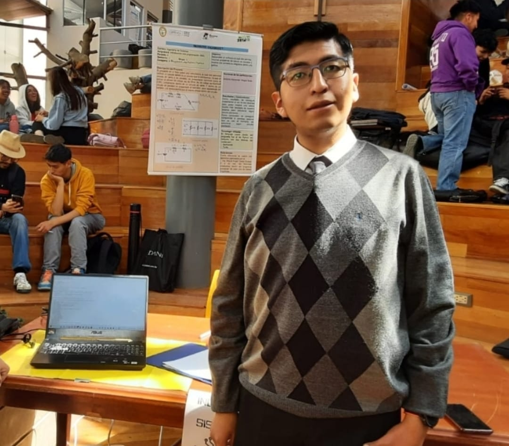
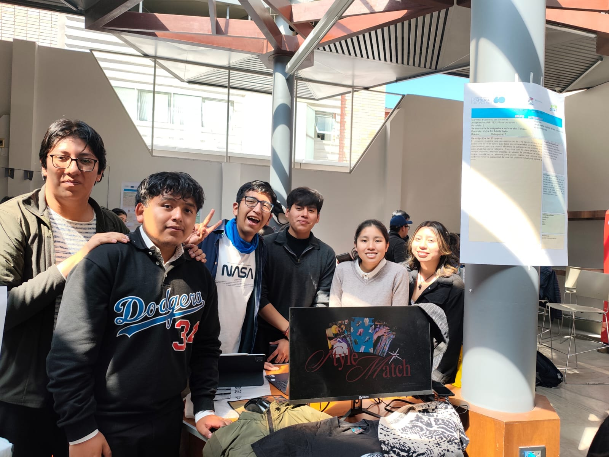

Trayectoria profesional, visión multidisciplinaria, formación académica e
idiomas.
Presentación Personal & Enfoque Multidisciplinario
Soy un Ingeniero de Sistemas e Ingeniero Mecatrónico titulado en la Universidad
Católica Boliviana "San Pablo" (UCB), apasionado por la integración simbiótica entre el
software de alto rendimiento, la arquitectura limpia de aplicaciones web y el control automatizado
de maquinaria y sensores.
Mi perfil combina una sólida formación analítica en ciencias de la computación con competencias
mecánicas, electrónicas y de auditoría de procesos. Aplico rigurosamente las buenas prácticas de
desarrollo: estándares internacionales W3C, accesibilidad web (WCAG 2.1), diseño modular,
patrones de diseño limpios y metodologías ágiles orientadas al impacto de valor real.
Doble formación en ingeniería: Enlace natural entre desarrollo lógico, firmware
embebido y sistemas distribuidos.
Capacidad pedagógica probada: Amplia trayectoria en docencia STEM universitaria
y secundaria en matemáticas, física y programación.
Resolución algorítmica: Destreza en modelado matemático, simulación
computacional, bases de datos y machine learning.
"Los limites estan hechos para romperse"
Formación Universitaria & Avance Académico
Seguimiento continuo del grado de culminación y asignaturas clave en la UCB:
Licenciatura en Ingeniería de Sistemas:85%
Licenciatura en Ingeniería Mecatrónica:62%
Asignaturas destacadas
Computación y Software: Estructuras de Datos, Arquitectura de Software,
Tecnologías Web, Bases de Datos Relacionales y NoSQL.
Mecatrónica y Automatización: Control Automático, Robótica Industrial,
Microcontroladores, Circuitos Digitales y PLC.
Programación Backend: Especializado en el desarrollo con C++
Certificaciones & Cursos de Especialización
Diplomado en Educación Superior & Docencia STEM
Universidad Católica Boliviana "San Pablo" — Metodologías activas, evaluación formativa y
pedagogía en ciencias exactas e ingeniería.
Certificación Profesional en Automatización Industrial y Control PLC
Instituto Técnico Superior — Programación de autómatas programables, integración SCADA y
redes industriales.
Desarrollo Web Full Stack Moderno (Frontend & Backend)
Certificación Internacional — Estándares HTML5, CSS3 Grid/Flexbox, JavaScript ES6+,
arquitecturas RESTful y despliegue en nube.
Dominio de Idiomas
Idioma
Nivel
Competencia Técnica
Evaluación Gráfica
Español
Nativo (C2)
Redacción técnica de ingeniería, oratoria académica y docencia
100%
Inglés
Avanzado (B2)
Lectura fluida de documentación técnica W3C/IEEE, comunicación técnica y ponencias
80%
Japonés
Básico (A2)
Comprensión lectora general y nociones de comunicación operativa
40%
Experiencia Laboral & Competencias Técnicas
Trayectoria profesional en ingeniería, docencia universitaria y desarrollo
tecnológico.
Ingeniero Consultor & Líder de Automatización
META & Proyectos Independientes — La Paz,
Bolivia
Liderazgo de proyectos de integración tecnológica, arquitectura de software a medida y
supervisión de sistemas automatizados.
Diseño e implementación de dashboards para monitoreo de datos de planta en tiempo real.
Normalización de bases de datos relacionales y optimización de consultas SQL en sistemas de
control de inventarios.
Asesoramiento técnico en auditoría de sistemas e infraestructura digital para microempresas
del sector manufacturero.
Docente STEM Universitario & Tutor Académico
Universidad Católica Boliviana (UCB) &
Preuniversitarios
Impartición de tutorías de alto nivel en cálculo, física aplicada, electrónica analógica/digital
y lógica de programación algorítmica.
Más de 150 estudiantes guiados con éxito en la aprobación de asignaturas de ciencias básicas
y programación.
Desarrollo de simuladores visuales e interactivos en JavaScript y Python para facilitar el
aprendizaje de circuitos y cálculo.
Coordinación de talleres extracurriculares de introducción a la robótica con plataformas
Arduino y microcontroladores ESP32.
Habilidades Técnicas
Evaluación objetiva de capacidades en ingeniería de software, arquitectura web, sistemas embebidos y
análisis de datos:
Competencias
Desarrollo Web & Frontend Semántico
HTML5 Semántico & Accesibilidad
WAI-ARIA95%
95%
CSS3 Moderno (Grid, Flexbox, Variables
:root)90%
90%
JavaScript Nativo (ES6+, DOM, Fetch
API)88%
88%
Ingeniería Mecatrónica & Hardware
Microcontroladores (ESP32, STM32,
Arduino)92%
92%
Control Automático & Modelado
Matemático85%
85%
Diseño de PCB & Simulación de
Circuitos80%
80%
Portafolio de Proyectos & Multimedia
Desarrollo de software, automatizaciones de ingeniería y demostraciones
audiovisuales.
Proyectos Destacados — Buscador en Tiempo Real
Filtre los proyectos por nombre, descripción, categoría o tecnología utilizada:
Mostrando todos los proyectos.
Títulos
Titulos universitarios en nivel de licenciatura e ingenieria

Titulo profesional - Ingenieria Mecatronica
Acreditación profesional en Ingeniería

Titulo profesional - Ing. en Sistemas
Certificación y grado académico complementario

Titulo profesional - Lic. en ciencias de la educacion
Diploma de reconocimiento y especialidad
Workshop
Participación y evidencias prácticas en talleres técnicos y workshops:

Workshop 2024
Presentación del primer prototipo funcional de Calxircuit, un calculador de Circuitos
electrónicos de corriente continua y alterna

Workshop 2026
Presentación del desarrollo de StyleMatch, una página para una tienda de ropa
Multimedia
Demostraciones interactivas:
🎥 Raonmisk:
Pruebas de evasión de obstáculos y lógica de control embebida (2023).
🎥 Clase presencial impartida:
Docencia y nivelación académica en secundaria (2024).
Servicios Profesionales & Contacto
Propuestas de valor en consultoría tecnológica, desarrollo e ingeniería
aplicada.
💻
Desarrollo Web & Software a Medida
Construcción de aplicaciones web accesibles, rápidas y modulares respetando los estándares
internacionales W3C y arquitecturas limpias.
⚙️
Automatización & Robótica Industrial
Programación de sistemas embebidos, sensorización, microcontroladores, controladores lógicos
(PLC) e integración de hardware con interfaces web.
🎓
Tutoría Universitaria & STEM
Clases de alto rendimiento en matemáticas superiores, cálculo, física, algoritmos, estructuras de
datos y preparación para exámenes universitarios.
📊
Auditoría & Gestión de Datos
Normalización de bases de datos relacionales, auditoría de integridad, automatización de
inventarios y elaboración de dashboards analíticos.
Formulario de Comunicación Directa
Complete los siguientes campos para coordinar consultorías, proyectos de ingeniería o tutorías
académicas: